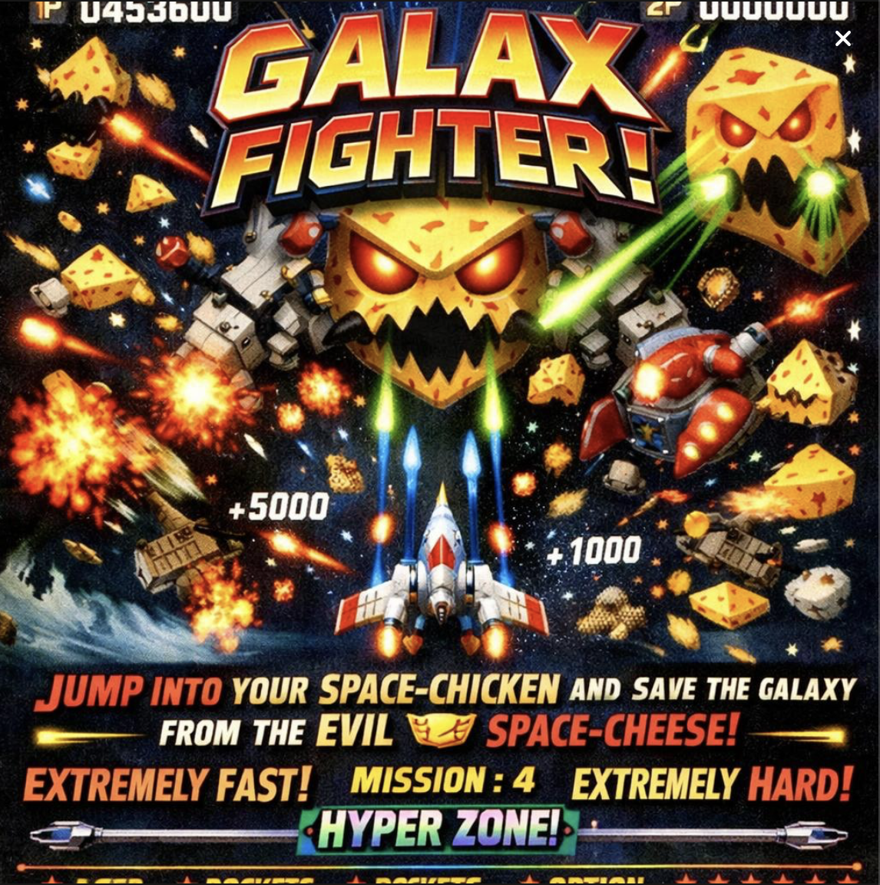

GALAX FIGHTER!
År: 1989
Genre: Vertikal Skjutare (Shmup)
Svårighetsgrad: ★★★★★
Hoppa in i din rymdkyckling och rädda galaxen från den onda Rymd-Osten! Extremt snabbt, extremt svårt. Texten ska vara tight packad.
Pris: 1 Mynt

QUEST FOR THE GOLDEN FLOPPY
År: 1991
Genre: Äventyr / Plattform
Svårighetsgrad: ★★☆☆☆
Du är en revisor som letar efter den sista fungerande disketten i världen. Lös pussel, hoppa över lava och undvik skatteinspektörerna.
Pris: 1 Mynt
TAXI RAMPAGE 2000
År: 1993
Genre: Körning / Kaos
Svårighetsgrad: ★★★★☆
Kör en gul taxi genom neonstaden. Plocka upp konstiga passagerare och leverera dem i 8-bitars stil. Ju snabbare och galnare du kör, desto högre poäng. Ingen broms.
Pris: 1 Mynt
DUST BUNNY DODGE
År: 1987
Genre: Endless Runner (Labyrint)
Svårighetsgrad: ★☆☆☆☆
En gullig, men förvirrande, spelupplevelse. Undvik dammråttor och sugande dammsugare. Perfekt för att slösa bort tio minuter.
Pris: 1 Mynt